最初に工期を設定
工期は最初から約2週間弱と決め、その中で完成度をどこまで高められるかに挑戦しました。
Production Process
2週間弱・ほぼ未経験2人制作の中で、どのように企画し、制作を進め、問題に対応したかをまとめています。
Production Setup
工期は最初から約2週間弱と決め、その中で完成度をどこまで高められるかに挑戦しました。
1週間でプレイ可能なプロトタイプを実装することを目標にし、戦闘の基本ループまで持っていきました。
自分もデザイナーもほぼ未経験の状態から、調査・分担・実装を進めました。
自分が主導し、必要な作業や現実的な進め方を調べ、デザイナーと共有しながら進行しました。
リグ作業で工期がずれそうになった際は、自分はプレイヤーアクションのブラッシュアップを先に進めました。
10数人にテストプレイしてもらい、スコアや感想をもとに難易度や演出を調整しました。
Original Dragon
「結晶を部位破壊するドラゴン」というコンセプトをもとに、 ラフ、AI支援によるメッシュ制作、リグ入れ、アニメーション、Unity実装まで進めました。
企画・ゲームコンセプト自体はAIではなく自分たちで考えました。 結晶をまとったドラゴン、尻尾の部位破壊、火山・鉱山系のステージを軸に方向性を固めました。
2人での話し合いをもとに、デザイナーが結晶ドラゴンのラフとステージラフを作成しました。
ラフをもとにAIで三面図や3Dモデル風プレビューを作成し、完成イメージを共有しました。 メッシュ制作にもAIを使用しています。
当初は既存アセットのドラゴンのボーンを移植する予定でしたが、ウェイトなどの問題が発生しました。 そのため、デザイナーが自力でリグ入れとアニメーションを行う方針に切り替えました。
エクスポートされたFBXに当たり判定を設定し、HPや攻撃判定を実装しました。 尻尾メッシュを分離したモデルを使い、一定ダメージで尻尾が切断される要素も作りました。
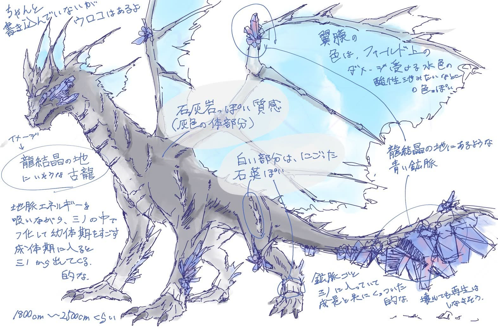
結晶をまとったドラゴンの方向性を決めたラフ。
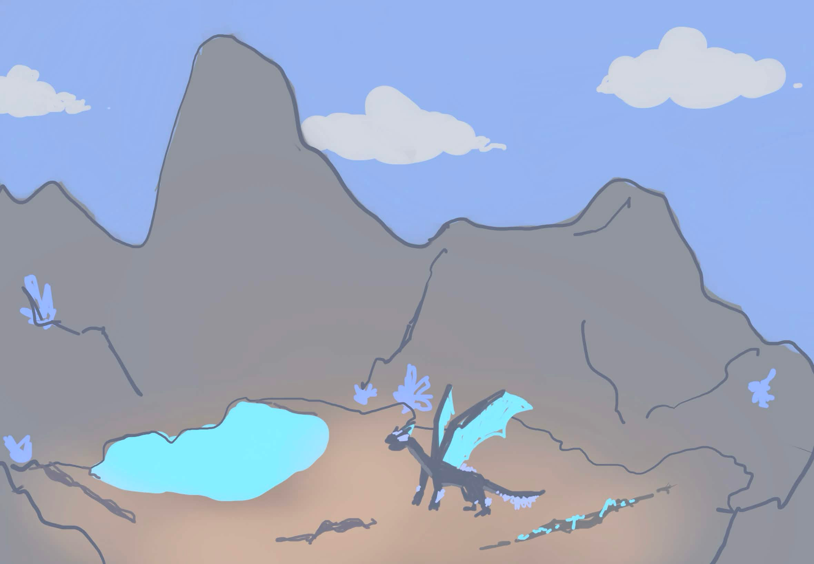
火山・鉱山系ステージの構想資料。
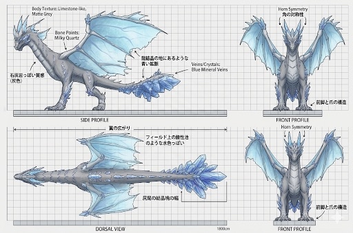
ラフをもとに形状確認用の三面図を作成。
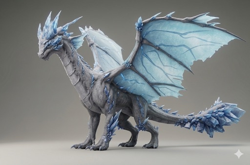
完成イメージ共有のためのプレビュー。
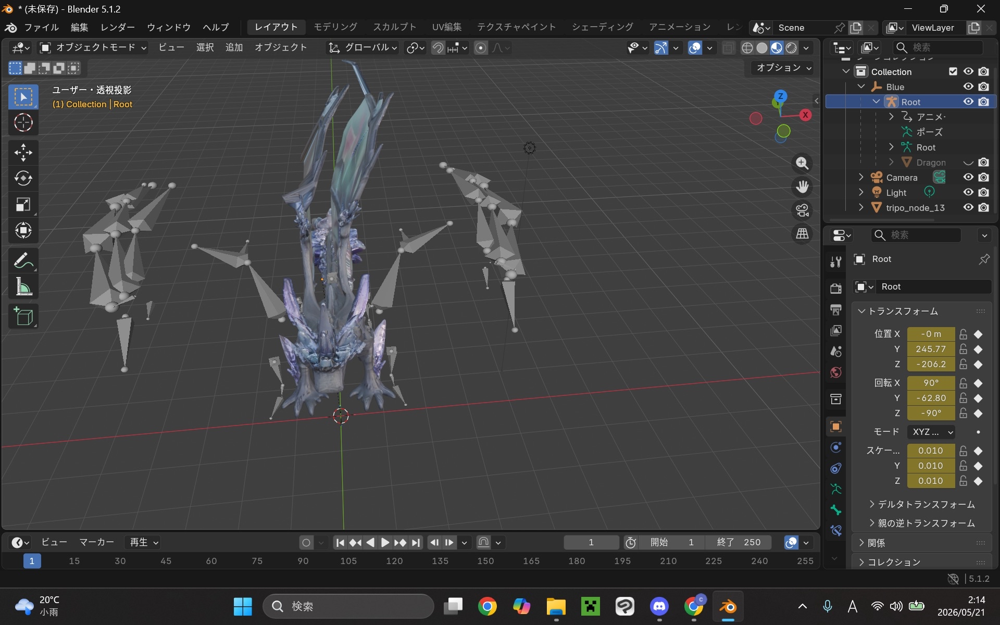
当初予定していたボーン移植作業。
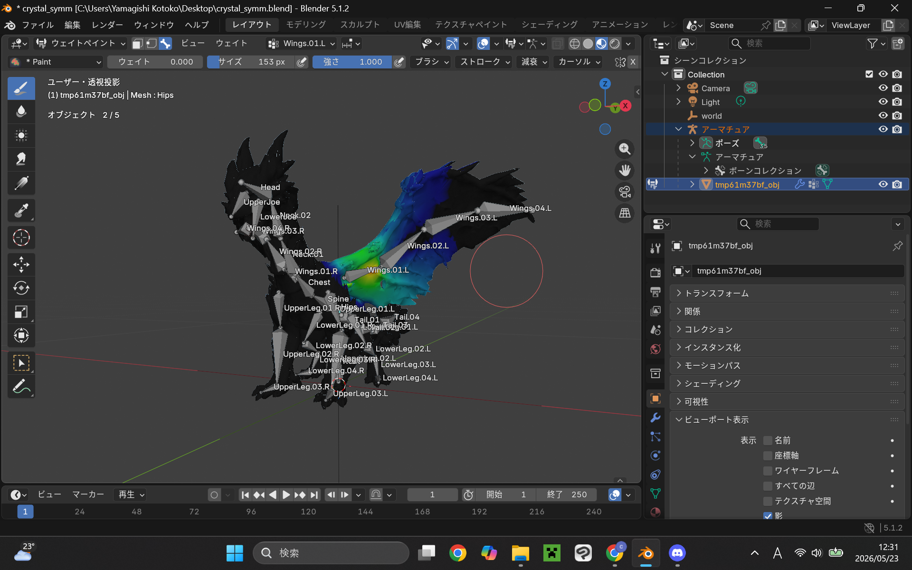
デザイナーが自力でリグ入れを進めた工程。
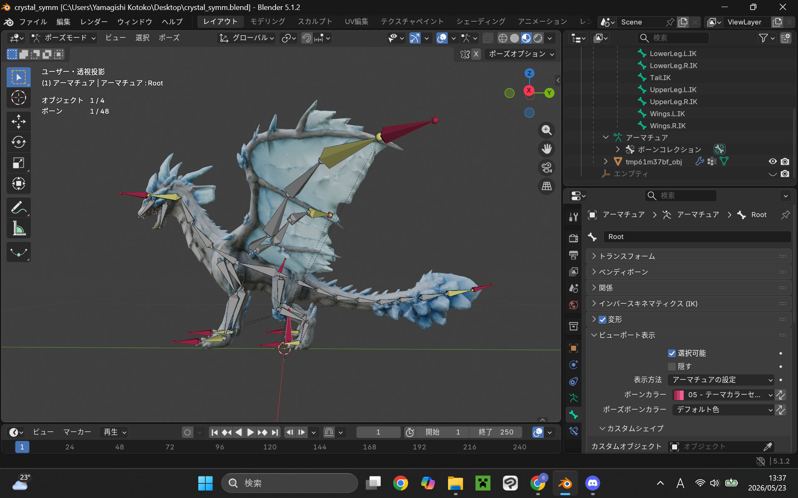
ポリゴン数などの問題も踏まえて調整したモデル。
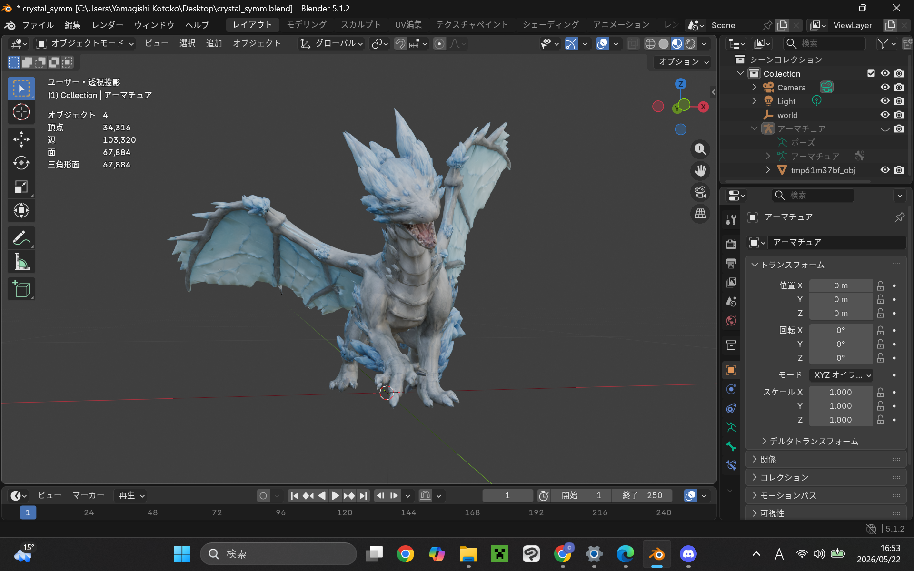
ドラゴンを動かしながら破綻を確認。
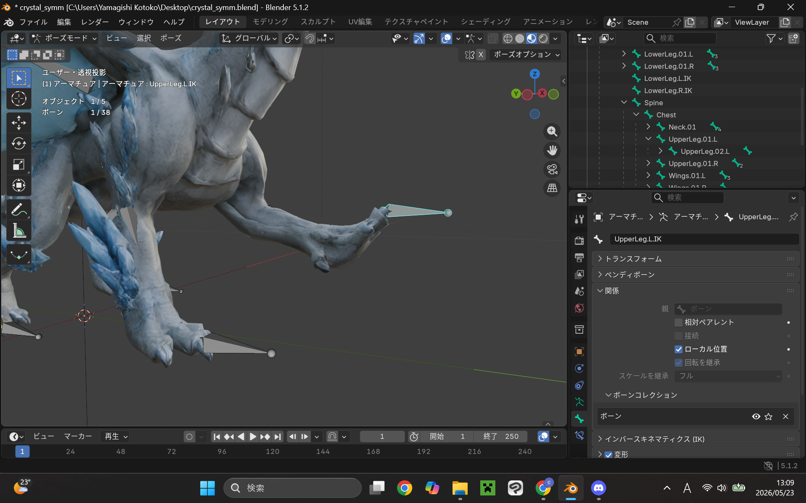
技の構想に合わせて動きを調整。
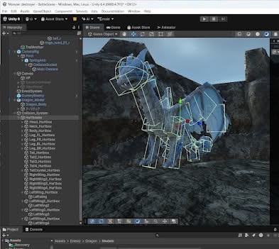
FBXモデルをUnityに持ち込み、戦闘用の判定を設定。
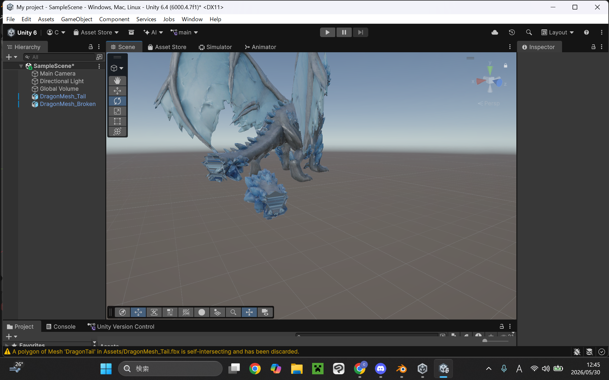
尻尾切断ギミックのために分離したモデル。
Difficulty Design
同じドラゴンを使いながらも、難易度ごとに体験差が出るように調整しました。

初心者が動きを理解しやすいよう、テンポやサイズ感を調整。

スコアや戦闘バランスの基準として調整。

行動間隔や速度、天候演出で緊張感を強化。
AI Usage
本制作では、短期間で完成度を上げるためにAIを補助的に活用しました。 特にC#スクリプト実装ではAIの出力を大きく活用しています。 一方で、ゲーム企画、ボス戦の仕様、尻尾切断ギミック、難易度設計、UI方針、テストプレイ結果の分析、 最終的な調整判断は自分で行いました。
Reflection
最初から工期と中間目標を設定したことで、短期間でも完成まで進めることができました。 一方で、モデル制作やリグ入れでは想定外の問題も多く、事前の見積もりの難しさも感じました。
短工期の開発では、最初から完璧を目指すよりも、まず遊べる核を早く作ることが重要だと学びました。 また、問題が起きたときに作業を並列化して進行を止めないことの大切さも実感しました。
次回は、制作前に必要素材や想定トラブルも含めて、より具体的な企画・制作計画を立て、 さらに安定した進行と高い完成度を目指したいです。